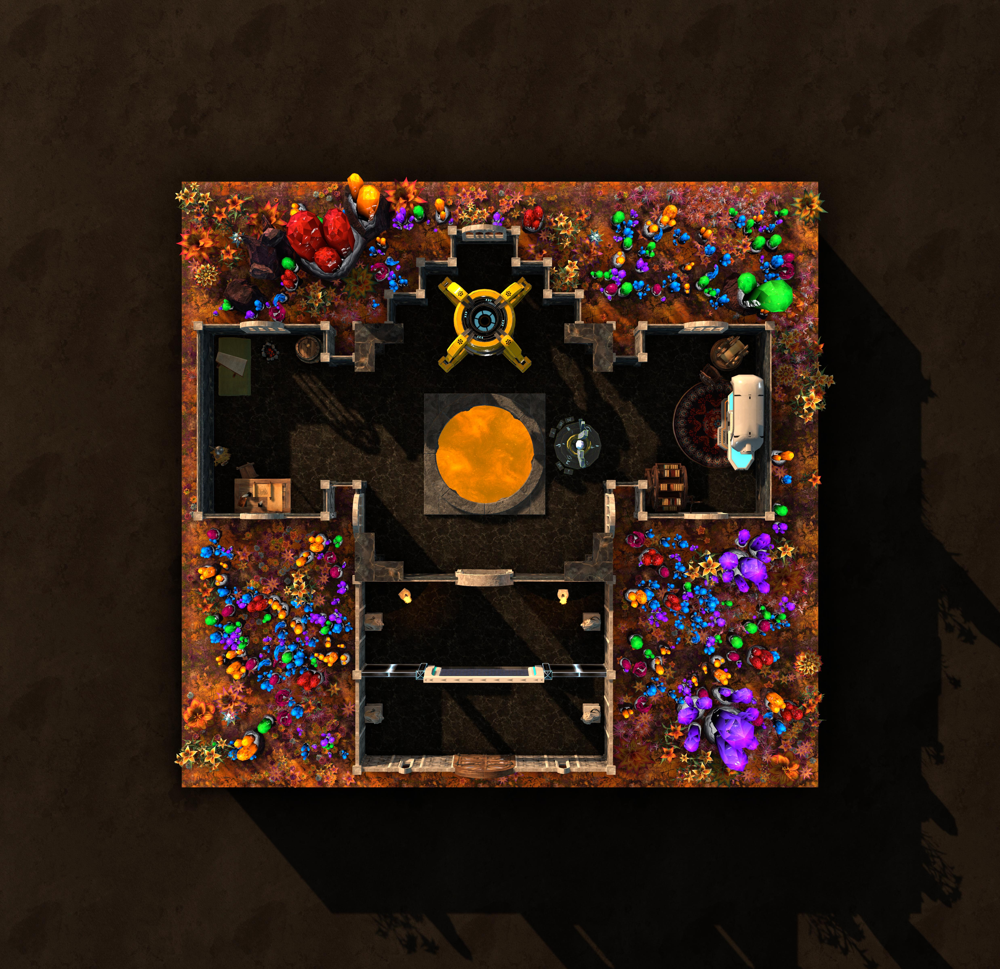

Modeladora de MatériaTanque e sistema de controleBiblioteca / FabricadoraAlojamentosLimiar dos ConvidadosItens e Anima
Consulte Itens e Anima para equipamentos pessoais, consumíveis, patrimônio do Templo e saldos.
Benefício ativo
Cada participante começa a próxima missão com 5 PV temporários e recebe +1 em salvaguardas de Constituição. As pesquisas de Amaya e Tchi-Dril concedem vantagem nas aplicações específicas registradas entre E2 e E3. Os benefícios terminam ao final da missão.
Ambiente
O acampamento anterior ficava à esquerda da chegada. O céu varia de azul pálido a roxo escuro, com poucas nuvens, sem sol ou estrelas; a duração do ciclo e sua relação com o tempo na Gorja não foram medidas.
Portas e janelas dão para uma paisagem de plantas, fungos e minerais coloridos. Ninyan e Tchi-Dril exploraram o exterior enquanto o trio visitava a oficina; sua extensão ainda é desconhecida.